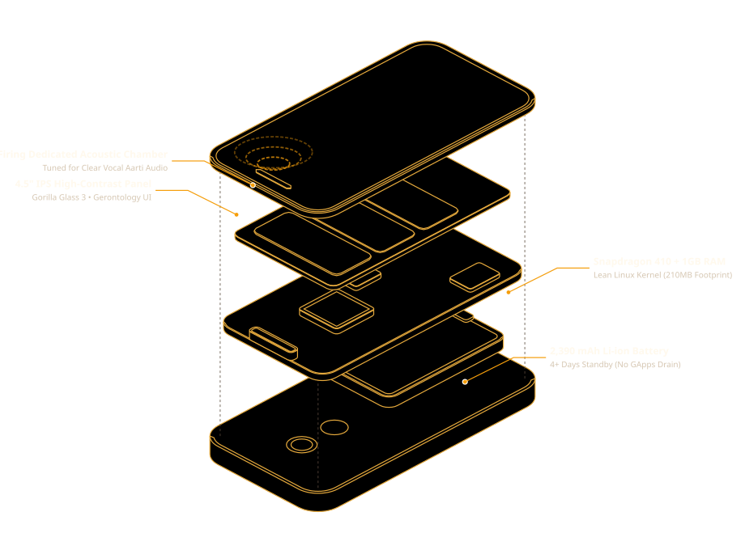
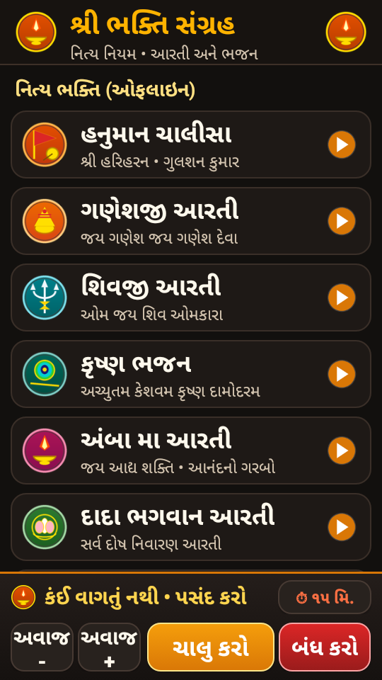
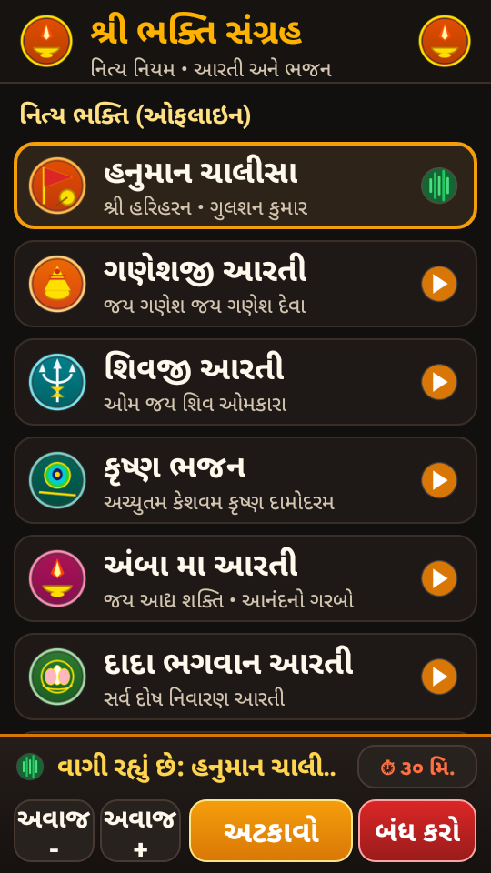
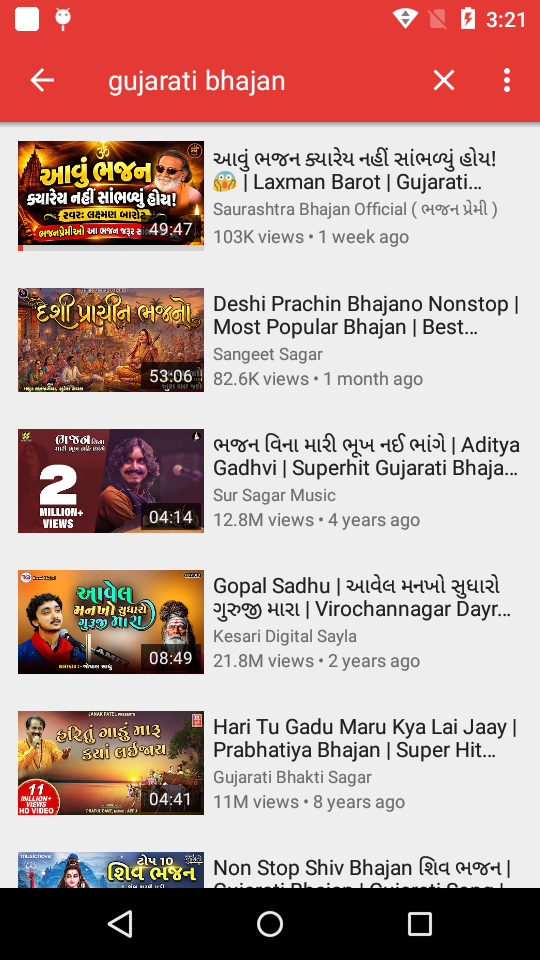

01. Hardware Skeleton & Anatomy
Every legacy smartphone houses high-grade precision hardware: a multi-core SoC, tuned acoustic speaker chambers, Wi-Fi/Bluetooth radios, power management ICs, and high-DPI IPS displays. Here is the physical deconstruction of our target benchmark device (Motorola Moto E 2nd Gen LTE — XT1528):

Isometric Engineering Breakdown: Exploded projection created with the Anatomy vector engine showing the polycarbonate shell, 2390 mAh lithium battery, Snapdragon 410 SoC board, front-firing speaker chamber, IPS panel, and Corning Gorilla Glass 3 lens.
02. The Software Transformation Stack
The reason old phones feel "slow" is almost never the hardware. It is the crushing weight of 50+ background carrier telemetry services and modern Google Play Services consuming 94% of physical RAM:

03. Flagship Appliance: શ્રી ભક્તિ સંગ્રહ (v2.1-Appliance)
Our primary implementation converts the Moto E into an exclusive, dedicated Devotional Media Hub built specifically for elderly Gujarati-speaking family members. Dialer, contacts, and complex OS menus are eliminated, replaced with high-contrast divine cards and tactile 1-touch controls:



🌟 Key Gerontology & Appliance Innovations (v2.1):
- Full Immersive Sticky Kiosk: Software navigation bar (Back, Home, Recents) and status bar are hidden. Seniors cannot accidentally tap Back or enter system menus.
- One-Touch Sleep Timer (⏱️ સ્લીપ ટાઈમર): Direct cycle on touch: Off ➔ 15 min ➔ 30 min ➔ 60 min. Gracefully stops playback after bedtime prayers.
- Power-On Auto-Boot (BootReceiver): Appliance boots directly into the prayer hub as soon as it is plugged into power or switched on.
- Altar Illumination Mode: Screen stays comfortably awake when on a charging stand (
stay_on_while_plugged_in 3). - Sacred Divine Emblems: Custom high-resolution deity badges (Gada, Modak, Trishul, Peacock Feather, Diya, Lotus, Chakra) for instant recognition without reading text.
04. Is Our APK the Whole Bundle? (Architecture)
Yes, organized into a deliberate 2-Tier Modular Architecture engineered specifically for low-RAM legacy phones:
📦 Tier 1: Appliance Kernel (< 500 KB)
The compiled BhaktiPlayer.apk binary is lightweight and self-contained. It includes the complete launcher, audio service, sleep timer, and a built-in sacred tone synthesizer fallback. Installs via ADB in 1 second without running out of memory.
🎵 Tier 2: Devotional Audio Pack
High-fidelity recordings reside on storage at /sdcard/Bhajans/. Storing tracks externally allows anyone to swap, update, or add their family's favorite prayers without recompiling the APK or needing an Android SDK.
⚙️ Tier 3: Turnkey Provisioner
Our automated scripts/setup_appliance.ps1 script automatically pushes audio files, resets dangerous density overrides, removes carrier bloat, and installs the APK in a single command.
05. The Universal AI Hardware Resurrection Prompt
Have an old phone in your drawer? Plug it into your PC, open Claude Code, Gemini CLI, Cursor, or ChatGPT, and paste this master prompt. The AI will inspect, debloat safely, and build your appliance automatically:
You are an expert embedded Android system engineer and hardware revitalization specialist. I have connected an older Android device (Android 4.4 to 10+) via USB with USB Debugging enabled. Our goal is to transform this device from discarded digital scrap into a dedicated, single-purpose hardware appliance. Follow this 5-phase execution plan: 1. HARDWARE RECONNAISSANCE: - Check device: `adb devices` - Inspect specs: `adb shell getprop ro.product.model`, `adb shell wm size`, `adb shell wm density`, `adb shell cat /proc/meminfo` - SAFETY CHECK: Ensure `wm density` does NOT have an `Override density: 0` set (causes infinite SystemUI crash). If so, run `adb shell wm density reset`. 2. SAFE DEBLOATING (USER 0 ONLY): - List packages via `adb shell pm list packages`. - Remove carrier/telemetry junk via `pm uninstall -k --user 0`. - NEVER touch: com.android.systemui, com.android.settings, com.android.providers.settings, com.android.phone, com.android.server.telecom. 3. APPLIANCE UI ARCHITECTURE: - Build a native zero-dependency Java app (no Flutter/React Native bloat). - High-contrast obsidian dark theme (#12100E) with brass gold accents (#FFB300). - Oversized touch targets (64dp height) and visual icon badges for senior motor accessibility. - Pinned bottom player dock with on-screen Volume, Play/Pause, Stop, and Sleep Timer. - Set as launcher via <category android:name="android.intent.category.HOME" /> in AndroidManifest.xml. 4. KIOSK HARDENING: - Enable Immersive Sticky full-screen mode (SYSTEM_UI_FLAG_IMMERSIVE_STICKY) to permanently hide the navigation bar. - Configure stay-awake on charge: `adb shell settings put global stay_on_while_plugged_in 3`. - Add BootReceiver with RECEIVE_BOOT_COMPLETED to launch the app on power-on. 5. NATIVE ZERO-DEPENDENCY COMPILATION: - Compile with AAPT + javac --release 8 + D8 + apksigner. - Install APK via `adb install -r <app.apk>`, test live on screen, and verify PID stability. Begin Phase 1 now by probing the connected ADB device.
Detailed prompt guidelines and options: docs/ai-prompt.md
06. Zero-to-Appliance: Complete Setup (From Scratch)
Starting with an old phone pulled fresh from a drawer? Follow these exact steps to unlock, authorize, and provision your hardware:
Wipe old PINs and accounts in Settings ➔ Backup & Reset ➔ Factory Reset. When it reboots, tap Skip for SIM, Skip for Google Account, and Skip for Lock Screen. Connect to Wi-Fi.
Go to Settings ➔ About phone. Find Build number and tap it 7 times rapidly until the popup says "You are now a developer!".
Go to Settings ➔ Developer options ➔ Toggle USB Debugging ON. Plug phone into PC with a data cable. When prompted on the phone screen, check ☑ Always allow from this computer and tap OK.
Verify with adb devices. It should report your phone serial followed by device.
Press the phone's Home button ➔ When prompted "Complete action using" ➔ Select શ્રી ભક્તિ સંગ્રહ (BhaktiPlayer) ➔ Tap ALWAYS. The phone is now permanently locked into your dedicated appliance!
Detailed brand-by-brand guide (Samsung, Xiaomi, LG, Motorola) & troubleshooting: docs/from-scratch-guide.md